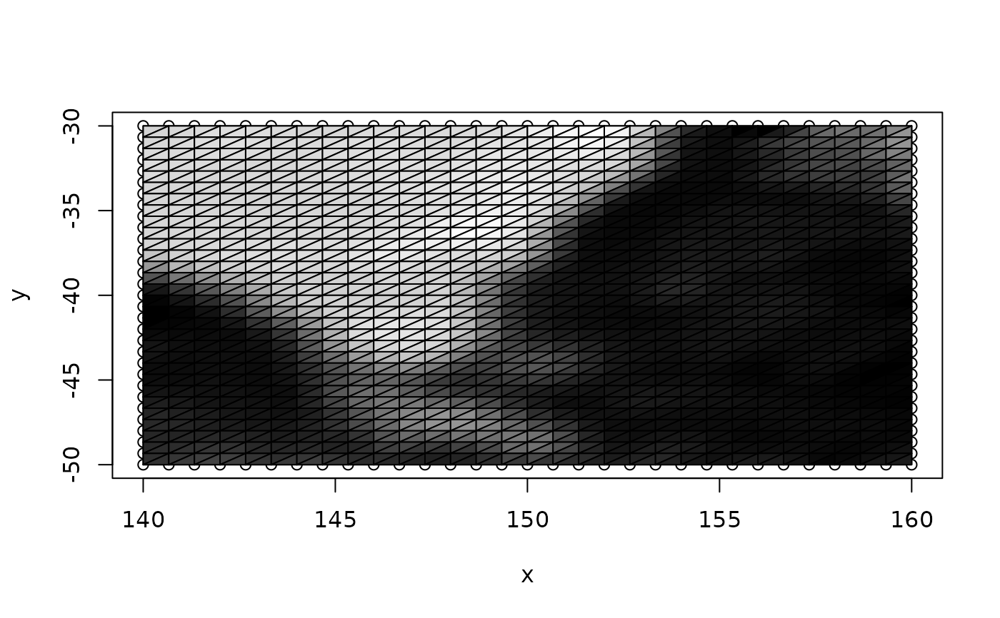

Convert quad index to triangles, this converts the 'rgl mesh3d (ib)' quad index to the complementary triangle index '(it)'.
triangulate_quads(quad_index, clockwise = FALSE)the 'ib' index of quads from 'quadmesh'
if true triangles are wound clockwise, if false anticlockwise. This affects which faces rendering engines consider to be the 'front' and 'back' of the triangle. If your mesh appears 'inside out', try the alternative setting.
matrix of triangle indices
Triangle pairs from each quad are interleaved in the result, so that neighbour triangles from a single quad are together.
triangulate_quads(cbind(c(1, 2, 4, 3), c(3, 4, 6, 5)))
#> [,1] [,2] [,3] [,4]
#> [1,] 1 3 3 5
#> [2,] 3 4 5 6
#> [3,] 2 2 4 4
qm <- quadmesh(raster::crop(etopo, raster::extent(140, 160, -50, -30)))
tri <- triangulate_quads(qm$ib)
plot(t(qm$vb))
tri_avg <- colMeans(matrix(qm$vb[3, tri], nrow = 3), na.rm = TRUE)
scl <- function(x) (x - min(x))/diff(range(x))
tri_col <- grey(seq(0, 1, length = 100))[scl(tri_avg) * 99 + 1]
## tri is qm$ib converted to triangles for the same vertex set
polygon(t(qm$vb)[rbind(tri, NA), ])
polygon(t(qm$vb)[rbind(tri, NA), ], col = tri_col)
